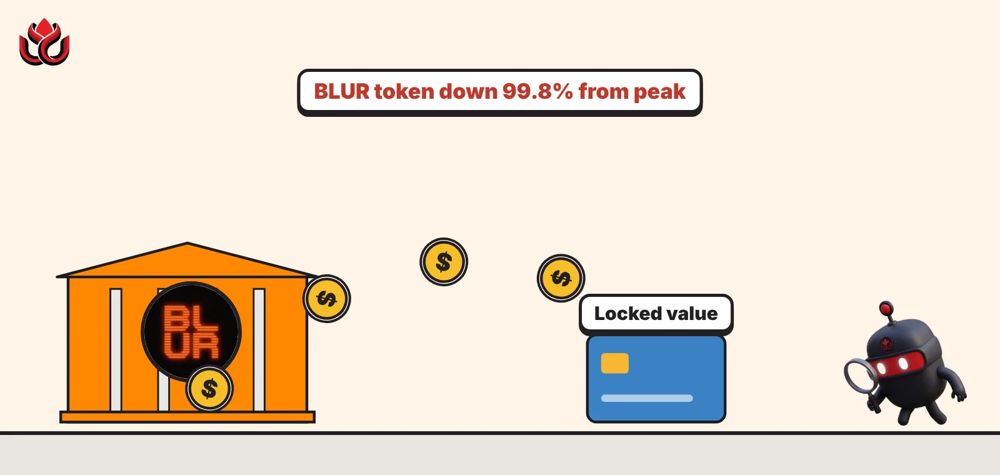
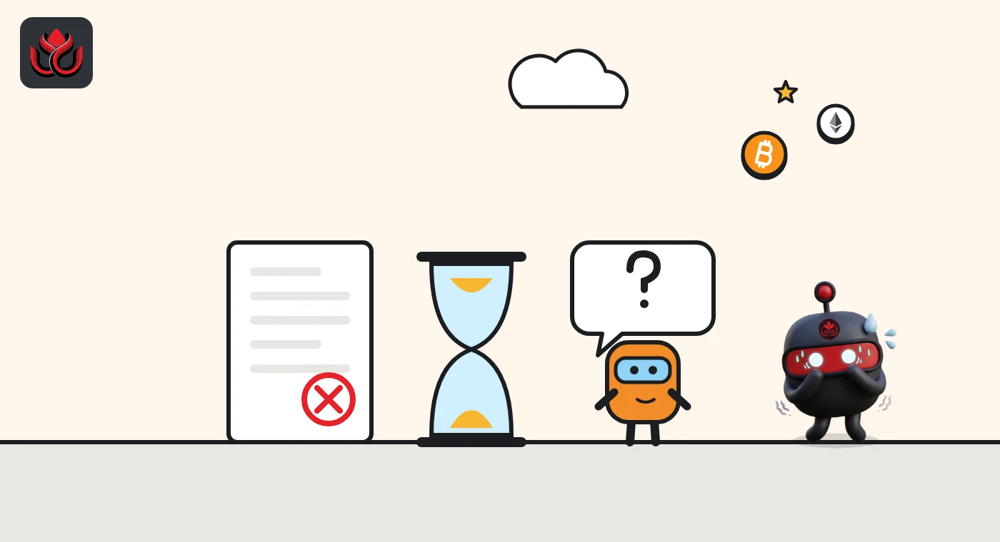
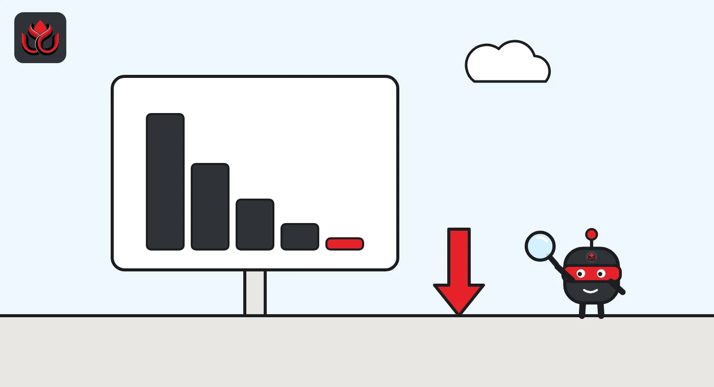

Blur switches off blur.io on November 12. Its token is down 99.8% from the peak
The NFT marketplace that boomed in 2023 is retiring its website and stopping new Blend loans, while its contracts stay live on Ethereum. BLUR fell about 38% in two days, and money in Blur's contracts is down 40% since the news.

Key points
- Blur's website, blur.io, closes on November 12, 2026, but its trading contracts keep running on Ethereum.
- Blend, Blur's NFT lending product, stops new loans the same day. Borrowers must repay or let loans default.
- Money in Blur's contracts fell about 40% in three weeks, to $14.91 million, and BLUR trades about 99.8% below its peak.
What Blur announced
Blur, the NFT marketplace that rose fast in 2023, said on October 12, 2026, that it will retire its website, blur.io, on November 12, 2026. The team posted the news in a three-part thread on X at about 3:59 p.m. ET.
Only the web interface is closing. The thread said the Blur marketplace protocol, the smart contracts that settle trades, will keep running on-chain. It also said the BLUR token will still control the protocol's fee switch, the setting that decides whether the protocol takes a cut of trades.
The thread gave no reason for the decision. It did not say whether anything would change with the fee switch. The final post warned users that the only official account is @blur_io and told them to watch out for impersonators and fake announcements.
What it means for Blend borrowers
Blend is Blur's peer-to-peer lending product, where people borrow ETH against NFTs they own. It will stop matching new loans on November 12. Blur wrote that borrowers "have until then to repay their loans or allow them to default."
In plain terms: if you have an NFT locked as collateral and do not repay, the lender can end up with the NFT. Blur said that after the deadline it will provide a front-end tool to help users withdraw their assets from Blend. It has not given a launch date.
Anyone with an open loan should check its terms well before November 12. After that date, managing a position will depend on Blur's promised tool or on interacting with the contracts directly.

Money is leaving Blur's contracts
Total value locked (TVL), the value of coins held in Blur's smart contracts, was about $25 million on October 12, according to DefiLlama. It fell to $19.1 million by October 15 and $14.91 million on November 2, a drop of about 40% since the announcement. Much of that value sits in Blend loans and bids, so the fall suggests users are already pulling money out ahead of the deadline.
The longer trend is steeper. Blur's TVL peaked at $215.92 million on March 9, 2024. It stood at $146.52 million at the end of 2024 and $29.99 million at the end of 2025. Fees tell the same story. DefiLlama records $2.85 million in fees in December 2024 and less than $5 for the whole of October 2026.
Value locked in Blur's contracts
US$ million
Source: DefiLlama, Blur protocol page, accessed November 2, 2026
What happened to the BLUR token
The token took a hit. CoinGecko's daily data shows BLUR at about $0.0192 on October 11, $0.0138 on October 12 and $0.0119 on October 13, a fall of about 38% in two days, according to CoinGecko. Its market value dropped from about $55.6 million to $40.3 million over the same days. Part of the slide came before the thread was posted.
The fall continued. BLUR closed near $0.0079 on November 1, with a market value of about $23.5 million. DefiLlama lists the token's all-time high as $5.02 on February 14, 2023, which puts it about 99.8% below its peak.

What still works after November 12
Closing a website is not the same as closing a marketplace. Blur's trades settle through smart contracts on Ethereum, and Blur says those contracts stay live. In principle, any other app or aggregator that reads those contracts can keep showing and filling orders. NFTs listed through Blur stay in users' own wallets.
What disappears is the convenient front end most traders used, plus new lending through Blend. Holders who relied on blur.io to manage listings or bids should review them before the deadline, since they will need another interface afterward.
Fake sites are the main near-term risk. Shutdown news often brings phishing pages that pose as migration or withdrawal tools, which is why Blur's own thread ended with a warning about impersonators.
Timeline
BLUR hits its all-time high of $5.02, per DefiLlama
Blur's TVL peaks at $215.92 million
Blur announces blur.io will be retired
BLUR near $0.0119, about 38% below its October 11 level
Blur TVL at $14.91 million
blur.io goes offline; Blend stops matching new loans
LC Insight analysis
This section is our reading of the facts above, not a statement of fact.
- Blur shows how quickly NFT market share moves. A venue that boomed in 2023 earned less than $5 in fees in October 2026, which tells us traders follow costs and rewards, not brands.
- Keeping the contracts live is a responsible exit. NFTs listed through Blur can still trade through other apps that read the protocol, so assets are less likely to get stuck.
- The biggest near-term risk for users is phishing, not the shutdown. Fake migration and withdrawal sites follow news like this, so only trust links from @blur_io.
What's next
- Release of Blur's promised Blend withdrawal tool
- Any BLUR governance move on the fee switch
- Blur TVL on DefiLlama as loans are repaid or default
Disclaimer. This article is based on public information and the sources listed below as of the update time shown. It is for information only and is not investment, legal or tax advice. Figures may change as companies and authorities publish new data.